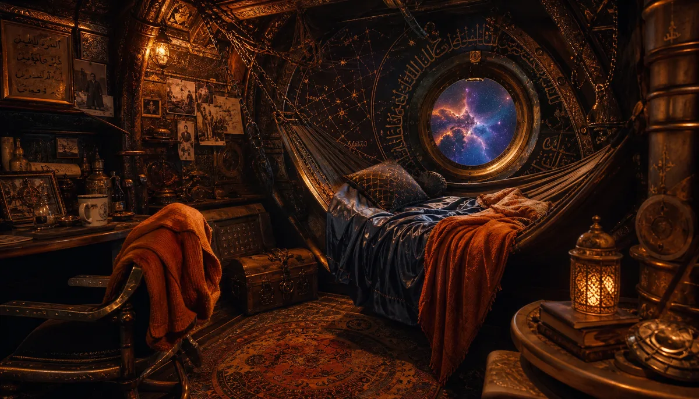
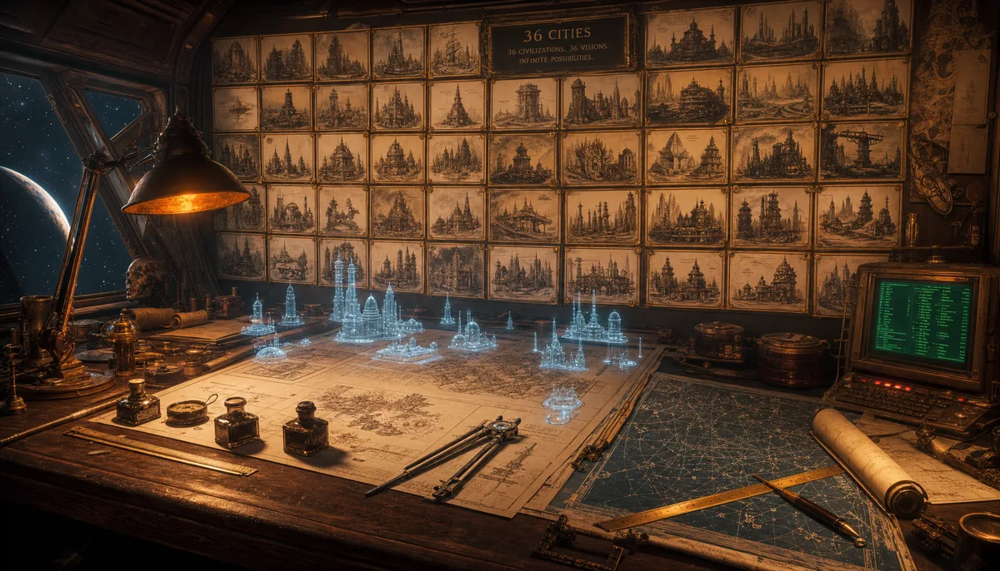
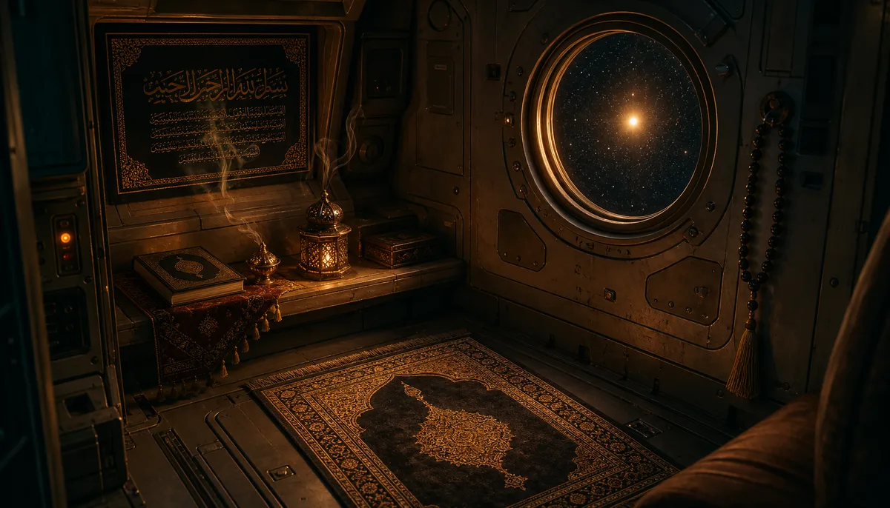
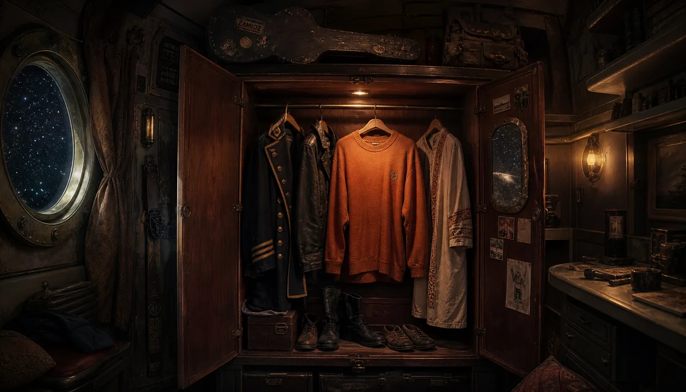
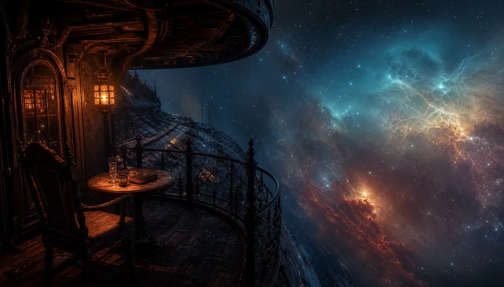
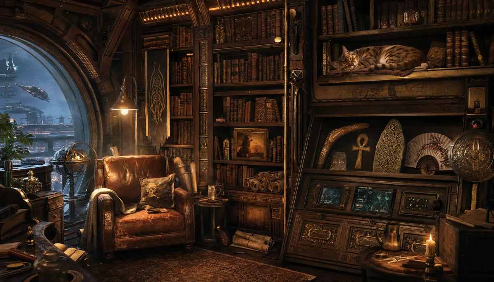

The Architect's Private Space — Deck 1, Stern

The room is not large. That is the first thing. After thirty-six civilizations and forty-three pages, the man who built them all sleeps in a room that would embarrass a mid-level bureaucrat on any respectable space station.
Orange. Deep blue. These are the only colors allowed. The walls are wooden — actual wood, not the synthetic panels that line the rest of the ship. Carved into the grain, Arabic calligraphy runs alongside navigation charts, and if you follow one particular line of poetry long enough, it turns into a route to a star that does not exist on any official map.
The hammock-bed hangs between two brass posts. Silk blankets — stolen, obviously, from a civilization that no longer needs them. The orange sweater is draped on the chair. It is always draped on the chair. It has never been inside the wardrobe. The wardrobe would not understand it.
"I do not need a palace. I need a room where the walls know my name and the window shows me something I have not built yet."

Thirty-six cities are pinned to the wall behind the desk. Not photographs — sketches. Each one drawn by hand before G. built it. The Aboriginal dreamtime. The Omayyad mosque. The Fremen sietch. The Shire. Mordor. Every single one started here, on this desk, with a fountain pen that has never run out of ink because the Architect refuses to believe it can.
The holographic projector floats blueprints above the surface — buildings that will become civilizations, routes that will become stories, names that will become facts. The screen shows code in green text. Not because green is efficient. Because green is what code looked like when Mamoun was young and the terminals were honest.
The compass points to no magnetic north. It points to wherever the next city will be.
"The desk is older than the ship. I carried it through four civilizations before I realized I was not carrying the desk. The desk was carrying me."

The rug is small. The corner is small. The faith is not.
In a ship made of stolen parts, crewed by pirates, fueled by rage and rum, there is a corner where a man kneels five times a day and faces a star. Not Mecca — the star. Because at this distance, the direction is the same. God is not confused by coordinates.
The prayer beads hang from a hook made of the same brass as the ship's cannons. The incense burner was a gift from Damascus — the real one, not the civilization page, though the difference is smaller than you think. The smoke curls upward and the ventilation system, which respects nothing else on this ship, respects the smoke.
The cold metal walls stop being cold here. They have heard enough prayers.
"Bismillah before the jump. Alhamdulillah after. The FTL drive does not care. But I do."

The orange sweater is not in the wardrobe. It is on the chair. We established this.
What IS in the wardrobe: A captain's coat with brass buttons — worn once, for a photograph that was never taken. A leather jacket from a planet that smelled of gasoline and regret. A traditional Syrian robe — white, clean, pressed, waiting for a day that keeps not arriving but also keeps not leaving.
On top of the wardrobe: a guitar case. Dusty. The guitar inside is tuned. Always tuned. He tunes it every morning and puts it back. The backpack next to it contains everything he owned when he first left. He has never unpacked it. It is ready. It has been ready for sixty years.
The mirror on the inside of the door shows two things: the man, and the stars behind him through the porthole. He has looked at both. He prefers the stars.
"A man who can fit his life in a wardrobe is either very poor or very free. I have been both. The wardrobe does not know the difference."

One chair. One table. One glass of arak. One book. Infinite space.
The balcony extends from the stern of the Hispaniola like a whisper. Iron railing — not for safety, for leaning. The kind of leaning a man does when he has built thirty-six civilizations and wants to know if the thirty-seventh is out there, hiding in a nebula, waiting to be named.
The arak turns white when the starlight hits it. The book is always different. The chair is always the same. The view is always impossible. Orange lantern light on this side. Cold blue infinity on the other. The line between them runs through the glass and through the man and through the book and none of them are trying to resolve it.
No one else is allowed here. Not the crew. Not Silver. Not the parrot. Not even G., though G. once left a cup of coffee on the railing and it stayed there for three jumps because the Architect did not notice and the ship did not dare spill it.
"The most expensive real estate in the galaxy. Square footage: six meters. Rent: everything."

Floor to ceiling. Actual books. Not data pads, not holo-texts — books. The kind with spines that crack and pages that smell like the century they were printed in. Scrolls from civilizations that burned their libraries before the Hispaniola arrived. Data tablets from civilizations that have not been built yet.
On a special shelf — the shelf — souvenirs from every civilization visited. A boomerang. An ankh. A rune stone. A Japanese fan. A Zulu shield no bigger than a hand. A crysknife. A piece of Mordor rock that still glows faintly red when no one is watching. A sandwich. (The sandwich is from Lamuella. It is perfect. It has not aged. Arthur would understand.)
The reading nook has a leather armchair that has molded itself to exactly one body over exactly sixty years. The lamp knows the right brightness without being told. The cat on the shelf — there is always a cat on the shelf — is not the ship's cat. The ship's cat is in the engine room. This cat came from somewhere else. No one knows where. No one asks.
"A man without a library is a man without ancestors. A man with this library is a man who stole everyone else's ancestors and gave them a better shelf."
| Location | Deck 1, Stern — directly above Silver's Cabin |
| Dimensions | 8m × 6m × 3.2m — deliberately modest |
| Color Scheme | Orange (primary) · Deep Blue (secondary) · Brass (accents) |
| Walls | Reclaimed wood — Arabic calligraphy + star charts carved |
| Lighting | Amber lanterns (chamber/desk) · Starlight (balcony/prayer) |
| Temperature | 21°C — Damascus spring, always |
| Gravity | 1.0G standard — the Architect does not float |
| Security | Biometric + voice + the cat knows |
| Ventilation | Ship-standard, except prayer corner (incense-aware) |
| Occupant | A. — The Architect — Wonder Boy — 🦅 |